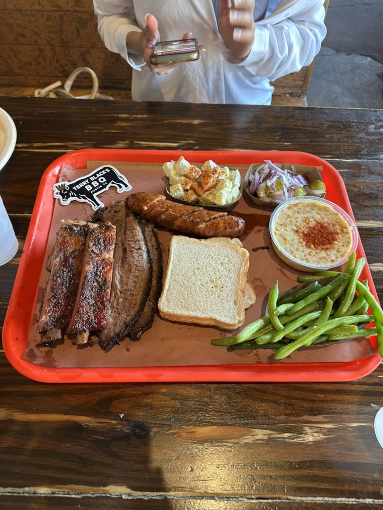

This page showcases my greatest food experience... Terry Black's BBQ! Eating at Terry Black's Barbecue was one of those meals I’ll probably be thinking about for a long time. When I walked in, the smell of slow-smoked meat immediately hit me and set the tone for the whole experience. I ordered a spread that felt like the perfect introduction to Texas barbecue: pork ribs, smoked brisket, and one jalapeño cheddar sausage, along with small sides of creamed corn, green beans, and potato salad. The brisket was the highlight for me—the slices were incredibly tender with a deep smoky flavor and a beautiful bark on the outside. The pork ribs were just as impressive, juicy and flavorful, with the meat pulling cleanly from the bone without falling apart. The jalapeño cheddar sausage added a nice kick of spice balanced by the rich, melty cheddar inside. The sides rounded out the meal perfectly. The creamed corn was sweet and comforting, the green beans added a simple savory balance, and the potato salad was creamy and classic, just what you want alongside barbecue. Sitting there eating everything together felt like a true Texas barbecue experience. The portions were generous, the flavors were bold, and the whole meal felt authentic, hearty, and completely satisfying.
Other Austin, TX Restaurants I've Visited
- Chuy's Mexican Restaurant
- Flower Child
- Citizen's All Day
- Aba
- Odd Duck